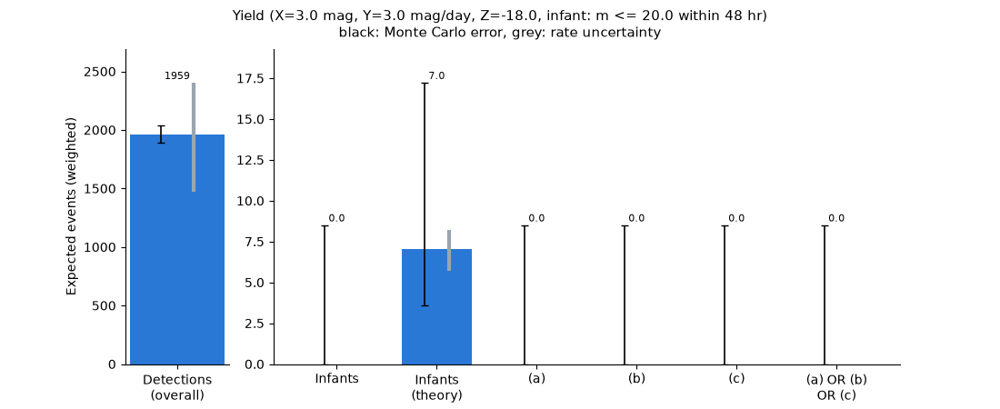

Note
Go to the end to download the full example code.
Infant Supernova Triggers#
How many infant supernovae does UVEX find, and how many can it trigger on early enough to get a spectrum?
Infant SNe are the internal triggers we can expect from UVEX, and can be used to trigger follow-up
spectroscopy. To make sure that spectroscopic follow-up is possible, we define an infant SN as an event that
reaches 20 AB mag or brighter (\(m \le 20\), INFANT_MAG) in a \(\ge 5\sigma\) detection within
the first 48 hours (WINDOW_HR) after the last non-detection in the same band.
To actually trigger on these events, we need cuts that can be applied early in the alert stream and serve as indicators. For a given event, we consider the following conditions, each evaluated on \(\ge 5\sigma\) detections within 48 hours of the last non-detection in the same band:
The event has brightened by at least \(X\) AB magnitudes in at least 1 band, from the limit at its last non-detection to the current detection.
The event is brightening at a rate of at least \(Y\) AB mag / day in at least 1 band, from the limit at its last non-detection to the current detection.
The event has an absolute magnitude brighter than \(Z\) (i.e. \(M \le Z\)) in at least 1 band.
An event is triggered if and only if (a) OR (b) OR (c) is satisfied. The thresholds \(X\), \(Y\) and \(Z\), along with the infant magnitude and time window, are the settings below.
The analysis reads the event summary and photometry tables of the infant supernova run from the latest release,
through get_results(). The brightening in (a) and (b) is measured from the
limit at the last non-detection, which is one of the photometry rows, so it needs the photometry to reach back
before the explosion (photometry_pre_window in configs/infant_sne.yaml). A release cut without it cannot
satisfy (a) or (b), and only (c) triggers.
import warnings
import astropy.units as u
import matplotlib.pyplot as plt
import numpy as np
from astropy.table import Table
from erfa import ErfaWarning
import uvex_transients.transients
from uvex_transients.dust import log_attenuation
from uvex_transients.missions import get_mission
from uvex_transients.utils import get_results, get_rng
# Reading the time columns triggers "dubious year" warnings; they're harmless.
warnings.filterwarnings("ignore", category=ErfaWarning)
Settings#
The trigger configuration. Change any of these and everything below follows.
DET_SNR = 5 # S/N for a detection (and for the limiting magnitude of a non-detection)
INFANT_MAG = 20.0 # infant SNe must reach m <= INFANT_MAG ...
WINDOW_HR = 48 # ... within this many hours of the last non-detection in the same band
X_BRIGHTEN = 3.0 # (a) brightening since the last non-detection limit, mag
Y_RATE = 3.0 # (b) brightening rate since the last non-detection limit, mag / day
Z_ABS_MAG = -18.0 # (c) absolute magnitude brighter than this (M <= Z)
USE_A, USE_B, USE_C = True, True, True # which conditions enter the OR
Load the tables#
The event summary has one row per detected event, and the photometry one row per observation of those events.
try:
paths = get_results(["summary", "photometry"], simulation="infant_sne")
summary = Table.read(paths["summary"], format="ascii.ecsv")
photometry = Table.read(paths["photometry"], format="ascii.ecsv")
except (ConnectionError, LookupError, OSError, ValueError) as err:
summary = photometry = None
print(f"Skipping this page's analysis, the release data is not available: {err}")
else:
print(f"Loaded {len(summary)} events and {len(photometry)} photometry rows.")
Extracting event_summary.ecsv: 0%| | 0.00/1.48M [00:00<?, ?B/s]
Extracting event_summary.ecsv: 100%|██████████| 1.48M/1.48M [00:00<00:00, 285MB/s]
Extracting photometry.ecsv: 0%| | 0.00/10.7M [00:00<?, ?B/s]
Extracting photometry.ecsv: 9%|▉ | 1.00M/10.7M [00:00<00:02, 3.88MB/s]
Extracting photometry.ecsv: 37%|███▋ | 4.00M/10.7M [00:00<00:01, 7.01MB/s]
Extracting photometry.ecsv: 65%|██████▌ | 7.00M/10.7M [00:00<00:00, 8.36MB/s]
Extracting photometry.ecsv: 84%|████████▍ | 9.00M/10.7M [00:01<00:00, 8.00MB/s]
Extracting photometry.ecsv: 100%|██████████| 10.7M/10.7M [00:01<00:00, 9.06MB/s]
Loaded 1926 events and 47020 photometry rows.
Table manipulations#
Each photometry row needs to know three things about its event: how long since the last non-detection in the same band, its absolute magnitude, and the limit of that last non-detection.
if summary is not None:
# Row of the summary table for each photometry row (event_id is unique in the summary).
order = np.argsort(summary["event_id"])
rows = order[np.searchsorted(summary["event_id"][order], photometry["event_id"])]
# Days since the last non-detection in the same band (negative if the exposure precedes it), NaN where
# there is none.
dt = np.full(len(photometry), np.nan)
for band in ("FUV", "NUV"):
t_and_mjd = np.ma.filled(summary[f"t_last_nondet_{band}"].mjd, np.nan)[rows]
in_band = photometry["band"] == band
dt[in_band] = photometry["obs_time"].mjd[in_band] - t_and_mjd[in_band]
photometry["dt_last_nondet"] = dt
photometry["dt_last_nondet"].unit = "d"
# The absolute magnitude of each epoch is its apparent magnitude minus the distance modulus. This is the
# observed-band absolute magnitude (m - mu), so Z in condition (c) is defined in the observed band.
d_l_pc = np.asarray(summary["luminosity_distance"], dtype=float) * 1e6 # Mpc to pc
distance_modulus = 5 * np.log10(d_l_pc / 10)
photometry["abs_mag"] = np.asarray(photometry["ab_mag"]) - distance_modulus[rows]
photometry["abs_mag"].unit = "mag"
# The brightening in (a) and (b) is measured from the 5-sigma limiting magnitude of the last non-detection
# (in the same band) to the current detection. That non-detection is one of the photometry rows, so look it
# up by (event, band, time). Where the non-detection predates the stored photometry, the limit is left as
# NaN, and (a)/(b) cannot be satisfied (such an epoch is also far outside the 48 hr window).
m_limit = -2.5 * np.log10(DET_SNR * np.asarray(photometry["flux_err"]) / 3631) # flux in Jy
obs_mjd = photometry["obs_time"].mjd
m_last_nondet = np.full(len(photometry), np.nan)
for band in ("FUV", "NUV"):
t_and_mjd = np.ma.filled(summary[f"t_last_nondet_{band}"].mjd, np.nan)
in_band = np.asarray(photometry["band"]) == band
# Photometry rows that are the last non-detection of their event in this band.
is_nondet = in_band & (np.abs(obs_mjd - t_and_mjd[rows]) < 1e-6)
limit_by_event = np.full(len(summary), np.nan)
limit_by_event[rows[is_nondet]] = m_limit[is_nondet]
m_last_nondet[in_band] = limit_by_event[rows[in_band]]
photometry["m_last_nondet"] = m_last_nondet
photometry["m_last_nondet"].unit = "mag"
Cut: infant SNe#
The first cut is to require that the event actually is an infant SN, i.e. that it reached the brightness
threshold (INFANT_MAG) within WINDOW_HR of the last non-detection. Whether or not we would have
triggered on it, such an SN is a candidate for follow-up spectroscopy.
The “theory” infants are the same, but with the window anchored on the true explosion time instead of the last non-detection, so they do not depend on the cadence. They are what a survey that observed continuously would find.
if summary is not None:
# Infant: some epoch with SNR >= DET_SNR, ab_mag <= INFANT_MAG and dt_last_nondet <= WINDOW_HR.
is_infant = (
(photometry["ab_mag"] <= INFANT_MAG)
& (photometry["dt_last_nondet"] <= WINDOW_HR / 24)
& (photometry["snr"] >= DET_SNR)
)
is_infant_theory = (
(photometry["ab_mag"] <= INFANT_MAG)
& (photometry["rel_time"] <= WINDOW_HR / 24)
& (photometry["snr"] >= DET_SNR)
)
infant_ids = np.asarray(list(set(photometry["event_id"][is_infant])))
infant_theory_ids = np.asarray(list(set(photometry["event_id"][is_infant_theory])))
print(f"There are {len(infant_ids)} infant SNe, and {len(infant_theory_ids)} in theory.")
infant_summary = summary[np.isin(summary["event_id"], infant_ids)]
infant_phot = photometry[np.isin(photometry["event_id"], infant_ids)]
def earliest_passing_rows(photometry, epoch_mask):
"""Event ids and photometry rows of the earliest epoch of each event for which epoch_mask holds.
Both bands are exposed together, so ties between bands resolve to whichever row comes first
in the table.
"""
candidates = np.flatnonzero(epoch_mask)
event_id = np.asarray(photometry["event_id"])[candidates]
by_event_time = np.lexsort((photometry["obs_time"].mjd[candidates], event_id))
candidates = candidates[by_event_time]
event_ids, first = np.unique(event_id[by_event_time], return_index=True)
return event_ids, candidates[first]
There are 0 infant SNe, and 8 in theory.
Cuts (a), (b) and (c)#
For each infant SN, find the earliest epoch at which each condition holds: a \(\ge 5\sigma\) detection
within WINDOW_HR of the last non-detection in the same band that
has brightened by at least
X_BRIGHTENmag relative to the 5-sigma limit of that non-detection,
has brightened at a rate of at least
Y_RATEmag / day since that limit,
is brighter than
Z_ABS_MAG.
Each returns the event_id of the infant SNe that pass, and the row of the photometry holding the earliest
passing epoch, which is the time at which that trigger would fire.
if summary is not None:
dt = np.asarray(infant_phot["dt_last_nondet"])
detected = np.asarray(infant_phot["snr"]) >= DET_SNR
in_window = (dt > 0) & (dt <= WINDOW_HR / 24)
# Brightening (mag, > 0 when brighter) from the last non-detection limit to this detection. The limit is
# NaN where the non-detection is not in the photometry, so those epochs never pass (a) or (b).
with np.errstate(invalid="ignore", divide="ignore"):
brightening = np.asarray(infant_phot["m_last_nondet"]) - np.asarray(infant_phot["ab_mag"])
meets_a = detected & in_window & (brightening >= X_BRIGHTEN)
meets_b = detected & in_window & (brightening / dt >= Y_RATE)
meets_c = detected & in_window & (np.asarray(infant_phot["abs_mag"]) <= Z_ABS_MAG)
cut_ids, cut_rows = {}, {}
for name, meets in (("a", meets_a), ("b", meets_b), ("c", meets_c)):
cut_ids[name], cut_rows[name] = earliest_passing_rows(infant_phot, meets)
print(f"(a) brightened >= {X_BRIGHTEN} mag: {len(cut_ids['a'])} of {len(infant_summary)} infant SNe")
print(f"(b) rate >= {Y_RATE} mag/day: {len(cut_ids['b'])} of {len(infant_summary)} infant SNe")
print(f"(c) M <= {Z_ABS_MAG}: {len(cut_ids['c'])} of {len(infant_summary)} infant SNe")
(a) brightened >= 3.0 mag: 0 of 0 infant SNe
(b) rate >= 3.0 mag/day: 0 of 0 infant SNe
(c) M <= -18.0: 0 of 0 infant SNe
Union of the cuts#
An infant SN is triggered if (a) OR (b) OR (c) holds, restricted to the conditions switched on by USE_A,
USE_B and USE_C.
if summary is not None:
passing = [cut_ids[name] for name, use in (("a", USE_A), ("b", USE_B), ("c", USE_C)) if use]
triggered_ids = (
np.unique(np.concatenate(passing))
if passing
else np.array([], dtype=np.asarray(infant_summary["event_id"]).dtype)
)
print(f"Triggered on {len(triggered_ids)} of {len(infant_summary)} infant SNe.")
Triggered on 0 of 0 infant SNe.
Yield comparison#
The expected number of events in each category: the sum of the event weights, where each Monte Carlo event stands for \(\mu_0 / n\) real ones. Every cut is a subset of the one before it, except that the three conditions are alternative ways of triggering on the infants. The overall detections dwarf everything else, so they get a panel of their own.
def weighted_count(event_ids):
"""Sum of the event weights over the given event ids."""
return float(np.sum(np.asarray(summary["weight"])[np.isin(summary["event_id"], event_ids)]))
categories = ["Detections\n(overall)", "Infants", "Infants\n(theory)", "(a)", "(b)", "(c)", "(a) OR (b)\nOR (c)"]
if summary is not None:
detected_ids = np.asarray(summary["event_id"])[np.asarray(summary["n_det"]) > 0]
yields = [
weighted_count(detected_ids),
weighted_count(infant_summary["event_id"]),
weighted_count(infant_theory_ids),
weighted_count(cut_ids["a"]),
weighted_count(cut_ids["b"]),
weighted_count(cut_ids["c"]),
weighted_count(triggered_ids),
]
# The overall detections dwarf everything else, so they get their own panel.
fig, (ax_det, ax_rest) = plt.subplots(1, 2, figsize=(11, 4.5), gridspec_kw={"width_ratios": [1, 6], "wspace": 0.12})
for ax, cols, fmt in ((ax_det, [0], "%.0f"), (ax_rest, range(1, len(categories)), "%.1f")):
bars = ax.bar(np.arange(len(cols)), [yields[c] for c in cols], 0.7, color="#2a78d6")
ax.bar_label(bars, fmt=fmt, fontsize=8, padding=2)
ax.set_xticks(np.arange(len(cols)), [categories[c] for c in cols])
ax.spines[["top", "right"]].set_visible(False)
ax_det.set_ylabel("Expected events (weighted)")
fig.suptitle(
f"Yield (X={X_BRIGHTEN} mag, Y={Y_RATE} mag/day, Z={Z_ABS_MAG}, "
f"infant: m <= {INFANT_MAG} within {WINDOW_HR} hr)",
fontsize=11,
)
plt.show()

Infant population#
What kinds of events are the infant SNe? The raw counts, and the expected number (the sum of the weights).
if summary is not None:
types, inverse = np.unique(np.asarray(infant_summary["transient_type"]), return_inverse=True)
n_raw = np.bincount(inverse, minlength=len(types))
n_weighted = np.bincount(inverse, weights=np.asarray(infant_summary["weight"]), minlength=len(types))
print(f"{len(infant_summary)} infant SNe ({n_weighted.sum():.1f} expected)")
for i in np.argsort(-n_weighted):
print(f" {types[i]:<16} {n_raw[i]:>3} events ({n_weighted[i]:.1f} expected)")
0 infant SNe (0.0 expected)
Light curves#
The measured photometry (detections and 5-sigma limits) of triggered events against days since explosion, with
the noiseless model light curve of the same event. The model is rebuilt the way the simulation built it: the
transient class, its SED parameters from the event’s own parameter_seed, and then the SED averaged over each
UVEX bandpass, with the event’s Milky Way reddening applied. The dotted line is the explosion, and the dashed
lines are the last non-detection of each band. The inset zooms in on the first days.
EVENT_IDS picks the events. By default N_EXAMPLES of the triggered ones are drawn at random.
EVENT_IDS = None # for example [35726]
N_EXAMPLES = 3
BAND_COLORS = {"FUV": "tab:blue", "NUV": "tab:red"}
X_RANGE = (-30, 60) # days since explosion
INSET_RANGE = (-2, 5)
# The transient class of each population, as the run config names them.
TRANSIENT_CLASSES = {
"iip_sne": "TypeIIPSNe",
"iip_excess_sne": "TypeIIPExcessSNe",
"iib_sne": "TypeIIbSNe",
"ib_sne": "TypeIbSNe",
"ic_sne": "TypeIcSNe",
"icbl_sne": "TypeIcBLSNe",
"slsne": "MagnetarSLSNe",
"ia_sne": "TypeIaSNe",
}
def theory_mag(event, bandpass, t_days):
"""Noiseless apparent AB magnitude of the event's model in `bandpass` at `t_days` since explosion."""
transient = getattr(uvex_transients.transients, TRANSIENT_CLASSES[str(event["transient_type"])])()
rng = get_rng(int(event["parameter_seed"]))
sed_params = {name: value[0] for name, value in transient.sed.sample_parameters(size=1, rng=rng).items()}
nu = bandpass.waveset.to(u.Hz, equivalencies=u.spectral())
mag = transient.sed.mag_bandpass(
bandpass,
t_days * u.day,
redshift=float(event["redshift"]),
luminosity_distance=float(event["luminosity_distance"]) * u.Mpc,
log_attenuation=log_attenuation(nu, float(event["ebv"])),
**sed_params,
)
return mag.value
def plot_event(event_id):
"""Plot the photometry and model light curve of one event, with an inset on its first days."""
row = np.flatnonzero(summary["event_id"] == event_id)[0]
event = summary[row]
# Last non-detection of each band, in days since explosion (NaN if the event has none).
t_explosion_mjd = summary["t_explosion"].mjd[row]
t_last_nondet = {
band: np.ma.filled(summary[f"t_last_nondet_{band}"].mjd, np.nan)[row] - t_explosion_mjd for band in BAND_COLORS
}
phot = photometry[photometry["event_id"] == event_id]
t = np.asarray(phot["rel_time"])
band_of = np.asarray(phot["band"])
detected = np.asarray(phot["snr"]) >= DET_SNR
ab_mag = np.asarray(phot["ab_mag"])
m_limit = -2.5 * np.log10(DET_SNR * np.asarray(phot["flux_err"]) / 3631) # 5-sigma limit (flux in Jy)
# The model only exists after the explosion; sample the first couple of days more densely.
t_model = np.concatenate([np.linspace(0.005, 2, 300), np.linspace(2, X_RANGE[1], 300)[1:]])
bandpasses = get_mission("uvex_fast").detector.bandpasses
theory = {band: theory_mag(event, bandpasses[band], t_model) for band in BAND_COLORS}
def draw(ax, labels):
for band, color in BAND_COLORS.items():
in_band = band_of == band
det, non_det = in_band & detected, in_band & ~detected
ax.plot(t_model, theory[band], color=color, lw=1.2, alpha=0.8, label=f"{band} model" if labels else None)
ax.errorbar(
t[det],
ab_mag[det],
yerr=phot["mag_err"][det],
color=color,
marker="o",
ms=4,
ls="",
capsize=2,
label=f"{band} detection" if labels else None,
)
ax.plot(
t[non_det],
m_limit[non_det],
color=color,
marker="v",
mfc="none",
ms=4,
ls="",
label=f"{band} 5σ limit" if labels else None,
)
ax.axvline(0, color="k", ls=":", lw=1)
for band, color in BAND_COLORS.items():
if np.isfinite(t_last_nondet[band]):
ax.axvline(
t_last_nondet[band], color=color, ls="--", lw=1, label=f"{band} last non-det" if labels else None
)
def mag_range(window):
"""(faint, bright) magnitude limits for `window`: the faint end holds the detections and limits,
the bright end also the model (which diverges to infinitely faint at the explosion)."""
in_window = (t >= window[0]) & (t <= window[1])
mags = np.concatenate([ab_mag[in_window & detected], m_limit[in_window & ~detected]])
mags = mags[np.isfinite(mags)]
in_model_window = (t_model >= window[0]) & (t_model <= window[1])
model_bright = min(np.nanmin(theory[band][in_model_window]) for band in BAND_COLORS)
if mags.size == 0: # nothing was measured in the window, so show the model
return model_bright + 3, model_bright - 0.5
return mags.max() + 0.5, min(mags.min(), model_bright) - 0.5
fig, ax = plt.subplots(figsize=(10, 5))
draw(ax, labels=True)
ax.set_xlim(*X_RANGE)
ax.set_ylim(*mag_range(X_RANGE))
ax.set_xlabel("Days since explosion")
ax.set_ylabel("AB mag")
ax.set_title(f"Event {event_id} ({event['transient_type']}, z = {event['redshift']:.3f})")
ax.legend(fontsize=8, ncol=2, loc="upper left")
inset = ax.inset_axes([0.6, 0.45, 0.3, 0.5])
draw(inset, labels=False)
inset.set_xlim(*INSET_RANGE)
inset.set_ylim(*mag_range(INSET_RANGE))
inset.tick_params(labelsize=7)
if summary is not None:
if EVENT_IDS is None:
pool = triggered_ids if len(triggered_ids) else infant_ids # nothing triggered: fall back to the infants
EVENT_IDS = np.random.default_rng(42).choice(pool, size=min(N_EXAMPLES, len(pool)), replace=False)
if len(EVENT_IDS) == 0:
print("There are no infant SNe in this release to plot.")
for event_id in EVENT_IDS:
plot_event(int(event_id))
plt.show()
There are no infant SNe in this release to plot.
Total running time of the script: (0 minutes 4.006 seconds)